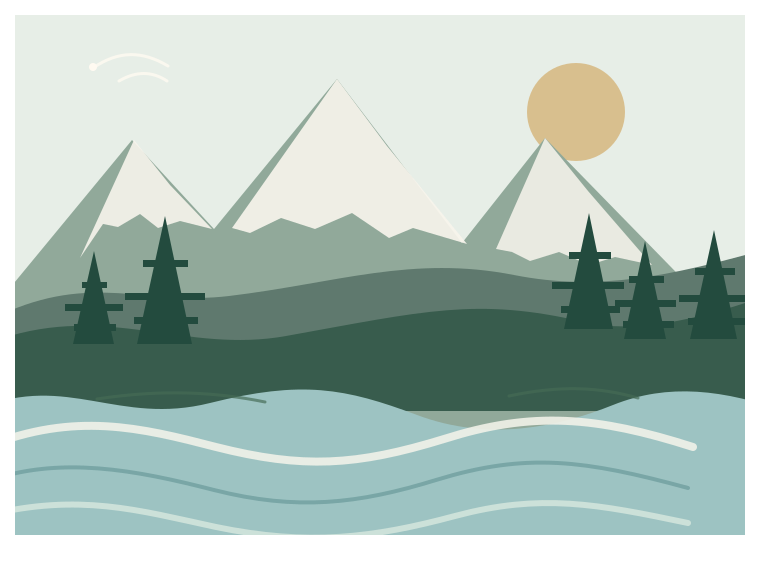

Aluminé, Neuquén
CAUCE · Aluminé
TODO LO LOCAL.
MÁS CERCA.
Estamos pensando una nueva forma de conectar comercios, emprendimientos y servicios de Aluminé con vecinos y visitantes.
Antes de avanzar queremos escuchar a quienes emprenden todos los días acá.
Te lleva menos de 2 minutos.
No pedimos datos personales. Solo queremos conocer tu mirada.

Tu experiencia importa
CAUCE · Aluminé
Pregunta 1 de 9
Guardamos el avance en este dispositivo y, al finalizar, tus respuestas anónimas en una hoja privada.
Una comunidad que escucha
Gracias por ayudarnos.
CAUCE se está construyendo para conectar y fortalecer la actividad local de Aluminé.
Tus respuestas nos ayudan a decidir cómo debería funcionar antes de lanzarlo.
CAUCE · AluminéComercio local. Comunidad real.
Volver a empezar